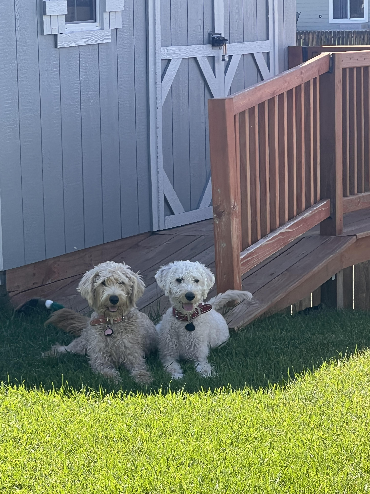

About
UX strategist, information architect, and plain-language advocate.
Photos


What I Do
I help teams plan and structure clear, usable digital experiences before design and development begin. My work focuses on UX strategy, information architecture, and content structure. I translate business goals into site maps, user flows, content frameworks, and documented requirements. I specialize in turning complex websites and systems into logical, user centered experiences that scale.
Professional Focus
I am pursuing roles as a Web UX/UI Strategist or UX Architecture Lead, where strategy, structure, and execution intersect. I enjoy leading discovery conversations, defining requirements, and collaborating with designers, developers, and stakeholders to ensure digital projects are built on a strong strategic foundation. I am especially drawn to environments that value quality, documentation, and continuous improvement.
Skills & Approach
My work emphasizes early phase UX planning, clear documentation, and cross team alignment. I create wireframes, user flows, and prototypes to guide build decisions, and I support projects through QA, audits, and iterative refinement. I care deeply about accessibility, usability, and clarity, and I enjoy improving consistency and performance across large, content heavy sites.
Education
Bachelor of Technical Communication and Information Design
University of Colorado Colorado Springs
Associate of Arts in Spanish with Designation
Pikes Peak State College
High School Diploma
Outside of Work
Outside of work, I enjoy spending time with my dogs and taking them to the dog park. I also enjoy going to the movies, playing video games, crocheting, painting, and working with ceramics.